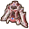
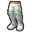
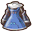
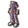
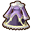
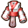
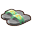

Lv 45 Armor Quest
Short quests that unlock the Lv 45 armor shops for each job line.
- Level
- 40 or higher
- Items needed
- Fighters: more than 100,000 G in your bag
- Spell Users: 1 ×
 Flower
Flower - Backpackers: 100 Fame
- Reward
- A shop with the Lv 45 armor for your job line
On this page
Before you start
- Each shopkeeper only sells the armor of your current job line. A Druid, for example, sees the Vates line armor. Change line later and the shop changes.
- Do the quest for your job group: Fighter, Spell User or Backpacker.
Walkthrough
1. Fighters: Arus's Mother
-
Go to the Rich Man's House in Upper Iron City and talk to Arus's Mother. You need to be level 40 or higher and carry more than 100,000 G. She only checks the gold; she doesn't take it.
-
She asks you to find her son. Go to Uptown and talk to Apprentice Blacksmith Arus.
-
Return to Arus's Mother. She opens the shop for your job line:
All Fighter jobs
Expert jobs and later only.
Swordsman, Blade Master, Bounty Hunter
Helm of War God24,000 G Mask of War God24,000 G
Mask of War God24,000 G
War God Full Armor(F)76,000 G War God Full Armor(M)76,000 G
War God Full Armor(M)76,000 GFencer, Knight, Dark Stalker
 Knight Boots(F)47,000 G
Knight Boots(F)47,000 G
Knight Boots(M)47,000 G Knight Armor(F)49,500 G
Knight Armor(F)49,500 G Knight Armor(M)49,500 G
Knight Armor(M)49,500 GScout, Assassin, Commando
 Concentration Headband12,800 G
Concentration Headband12,800 G Hood12,800 G
Hood12,800 G Assassin Boots(F)40,000 G
Assassin Boots(F)40,000 G
Assassin Suit(F)46,000 G
Assassin Suit(M)86,000 GArcher, Striker, Gunner
 Arus's Mother
Arus's Mother
 Apprentice Blacksmith Arus
Apprentice Blacksmith Arus

2. Spell Users: the Fallen Titania
- Get 1 × Flower.
-
Go to Northern Promenade and enter the Spell User Guild Headquarters' Lobby. Step into the portal inside and choose to jump in. It takes you to the Secret Headquarter Room, where the Fallen Titania lives. You need to be a Spell User job at level 40 or higher.
-
Talk to her. She asks you to stay away and sends you back to the lobby.
-
Enter the portal again and choose the Sorcerer Master Room. Talk to the Sorcerer. He tells you she would feel better with a flower.
-
Go back to the Secret Headquarter Room and talk to the Fallen Titania. She takes the
Flower. -
Talk to the Sorcerer once more, then return to the Fallen Titania. She opens the shop for your job line:
All Spell User jobs
Expert jobs and later only.
Wizard, Sorcerer, Sage
Ribbon Headband13,000 G Strange Earmuffs13,000 G
Strange Earmuffs13,000 G Sorcerer Boots(M)31,000 G
Sorcerer Boots(M)31,000 G Sorceress Boots(F)31,000 G
Sorceress Boots(F)31,000 G Sorcerer Robe(M)36,000 G
Sorcerer Robe(M)36,000 G
Sorceress Clothes(F)36,000 GShaman, Elementalist, Enchanter
 Crow Hat13,500 G
Crow Hat13,500 G Female Shaman Baggy Pants(F)22,000 GFemale Shaman Slim Pants(F)22,000 G
Female Shaman Baggy Pants(F)22,000 GFemale Shaman Slim Pants(F)22,000 G Female Shaman Straw Sandals(F)29,500 G
Female Shaman Straw Sandals(F)29,500 G Straw Sandals(M)29,500 G
Straw Sandals(M)29,500 G
Female Shaman Robe(F)35,000 G Hunter Uniform(M)57,000 G
Hunter Uniform(M)57,000 GVates, Druid, Bard
Warlock, Cabalist, Necromancer
 Fallen Titania
Fallen Titania

3. Backpackers: Ryu
-
Go to East Cape and talk to Ryu. You need to be level 40 or higher with 100 Fame. He asks you to tell his sister to come home.
-
Return to Ryu. He opens the shop for your job line:
All Backpacker jobs
Expert jobs and later only.
Miner (Tatarabe), Blacksmith, Engineer (Machinery)
 Heatproof Sun Visor10,000 G
Heatproof Sun Visor10,000 G Heatproof Pants(F)12,000 G
Heatproof Pants(F)12,000 G Heatproof Pants(M)12,000 G
Heatproof Pants(M)12,000 G
Heatproof Sandals(F)26,500 G Heatproof Sandals(M)26,500 G
Heatproof Sandals(M)26,500 G Heatproof Dress(M)48,000 G
Heatproof Dress(M)48,000 G Heatproof Suit(F)48,000 G
Heatproof Suit(F)48,000 GFarmer, Alchemist, Marionettist
Pharmacist Pants(F)9,000 G Pharmacist Pants(M)9,000 G
Pharmacist Pants(M)9,000 G MiMi Hat12,800 G
MiMi Hat12,800 G Pharmacist Hat12,800 G
Pharmacist Hat12,800 G Flat Clogs(M)20,200 G
Flat Clogs(M)20,200 G Loose Socks Shoes(F)20,200 G
Loose Socks Shoes(F)20,200 G Pharmacist Coat(F)48,000 G
Pharmacist Coat(F)48,000 G Pharmacist Uniform(M)48,000 G
Pharmacist Uniform(M)48,000 GRanger, Explorer, Treasure Hunter
 Seeker Pants(M)10,000 G
Seeker Pants(M)10,000 G Seeker Boots(F)15,400 G
Seeker Boots(F)15,400 G Seeker Pants(M)15,400 G
Seeker Pants(M)15,400 G Goggle Hat16,600 G
Goggle Hat16,600 G Seeker Goggles(F)16,600 G
Seeker Goggles(F)16,600 G Seeker Clothes(M)48,000 G
Seeker Clothes(M)48,000 G Seeker Pants(F)58,000 G
Seeker Pants(F)58,000 GMerchant, Trader, Gambler
 Ryu
Ryu
 Sapane
Sapane